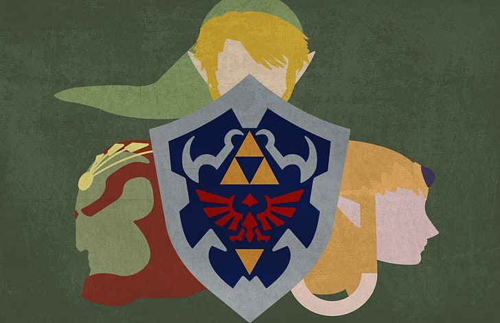

The Legend of Zelda
Link the Hero of Hyrule, Bearer of the Triforce of Courage and Wielder of the Master Sword

The Legend of Zelda is a high fantasy action-adventure video game franchise created by Japanese game designers Shigeru Miyamoto and Takashi Tezuka.
The History of the Zelda Franchise
- 1986 - The Legend of Zelda, the first game of the series, was first released in Japan on February 21, 1986, on the Famicom Disk System
- 1987 - Zelda II: The Adventure of Link is an action role-playing video game with platforming elements. This second installment in The Legend of Zelda series was developed and published by Nintendo for the Family Computer Disk System on January 14, 1987
- 1991 - The Legend of Zelda: A Link to the Past is an action-adventure game developed and published by Nintendo for the Super Nintendo Entertainment System. It is the third game in The Legend of Zelda series and was released in 1991 in Japan and 1992 in North America and Europe
- 1993 - The Legend of Zelda: Link's Awakening is a 1993 action-adventure game developed and published by Nintendo for the Game Boy. It is the fourth installment in the Legend of Zelda series and the first for a handheld game console
- 1998 - The Legend of Zelda: Ocarina of Time is an action-adventure game developed and published by Nintendo for the Nintendo 64. It was released in Japan and North America in November 1998. Ocarina of Time is the fifth game in The Legend of Zelda series, and the first with 3D graphics. The Legend of Zelda: Link's Awakening (DX) is rereleased
- 2000 - The Legend of Zelda: Majora's Mask is an action-adventure game developed and published by Nintendo for the Nintendo 64. It was released in 2000 as the sixth main installment in The Legend of Zelda series and was the second to use 3D graphics, following 1998's The Legend of Zelda: Ocarina of Time, to which it is a direct sequel
- 2001 - The Legend of Zelda: Oracle of Seasons and The Legend of Zelda: Oracle of Ages are two action-adventure games in the Legend of Zelda series, developed by Flagship. They were released in 2001 for Nintendo's Game Boy Color handheld console. The games make up the seventh and eighth installment in the Zelda series
- 2002 - The Legend of Zelda: A Link to the Past and Four Swords is the ninth installment and was co-developed by Nintendo and Capcom for the Game Boy Advance. The Legend of Zelda: The Wind Waker the tenth installment is an action-adventure game developed and published by Nintendo for the GameCube home video game console
- 2004 - The Legend of Zelda: Four Swords Adventures is the eleventh installment in Nintendo's The Legend of Zelda series. It was released for the GameCube home video game console in Japan on March 18, 2004.
- 2004 - The Legend of Zelda: The Minish Cap is an action-adventure game and the twelfth entry in The Legend of Zelda series. Developed by Capcom and Flagship, with Nintendo overseeing the development process, it was released for the Game Boy Advance handheld game console in Japan and Europe in 2004
- 2006 - The Legend of Zelda: Twilight Princess is an action-adventure game developed and published by Nintendo for the GameCube and Wii home video game consoles. It is the thirteenth installment in the series The Legend of Zelda. Originally planned for release exclusively on the GameCube in November 2005, Twilight Princess was delayed by Nintendo to allow its developers to refine the game, add more content, and port it to the Wii
- 2007 - The Legend of Zelda: Phantom Hourglass is an action-adventure game developed and published by Nintendo for the Nintendo DS handheld game console. It is the fourteenth installment in The Legend of Zelda series and the direct sequel to the 2002 GameCube title The Wind Waker. Phantom Hourglass was released in Japan in June 2007
- 2009 - The Legend of Zelda: Spirit Tracks is direct seqel to Phantom Hourglass. The fifteen installment in the Legend of Zelda series, it was released worldwide in December 2009 for the Nintedo DS handheld game console
- 2011 - The Legend of Zelda: Skyward Sword is the sixteenth mainline entry in The Legend of Zelda series, it was released worldwide in November 2011. Taking the role of series protagonist Link, players navigate the floating island of Skyloft and the land below it, completing quests that advance the story and solving environmental and dungeon-based puzzles
- 2013 - The Legend of Zelda: A Link Between Worlds is the 17th installment in The Legend of Zelda series released in 2013 and is a sequel to the 1991 SNES game A Link to the Past
- 2015 - The Legend of Zelda: Tri Force Heroes the 18th installment of the series was released in 2015 for the Nintendo 3DS handheld game console
- 2017 - The Legend of Zelda: Breath of the Wild is a 2017 and is the 19th installment of the series. This game was the headliner for Nintendo's wewly launched handheld gaming console called the Nintendo Switch
- 2019 - The Legend of Zelda: Link's Awakening is the 20th installment of the series developed by Grezzo and published by Nintendo for the Nintendo Switch. It was released on September 20, 2019. As of March 2020, the game has sold over 4 million copies worldwide, making it one of the best-selling Nintendo Switch games
- TBA - The soon to be released 21th installment is a direct sequel to the Breath of the Wild and is slated to be released for the Nintendo Switch